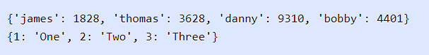
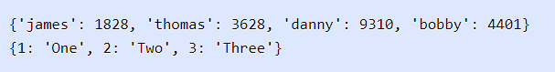
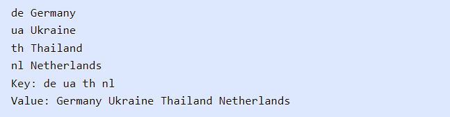
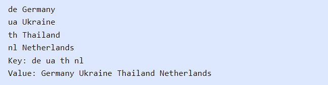
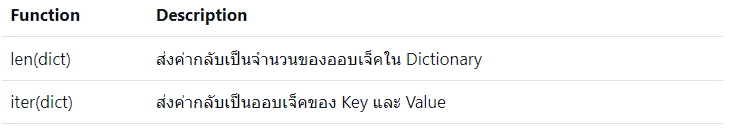

Dictionary ในภาษา Pythonในบทนี้ คุณจะได้เรียนรู้เกี่ยวกับโครงสร้างข้อมูล
Dictionary ในภาษา Python เราจะแนะนำให้คุณรู้จักกับ Dictionary คืออะไร
และการประกาศและใช้งานสำหรับเก็บข้อมูลในการเขียนโปรแกรม นอกจากนี้
เรายังจะพูดถึงการใช้งานเมธอดและ built-in functions ของ Dictionary
และตัวอย่างการใช้งานกับการเขียนโปรแกรมในรูปแบบต่างๆ ในภาษา Python
Dictionary คือประเภทข้อมูลที่เก็บข้อมูลในรูปแบบคู่ของ Key และ Value โดยที่ Key ใช้สำหรับเป็น
Index ในการเข้าถึงข้อมูลและ Value เป็นค่าข้อมูลที่สอดคล้องกับ Key ของมัน การเข้าถึงข้อมูลใน
Dictionary นั้นรวดเร็วเพราะว่าข้อมูลได้ถูกทำ Index ไว้อัตโนมัติโดยใช้ Key นอกจากนี้
Dictionary ยังมีเมธอดและฟังก์ชันอำนวยความสะดวกสำหรับการทำงานทั่วไป
การประกาศ Dictionary ในภาษา Python
ในการใช้งาน Dictionary
เรามักจะใช้เก็บข้อมูลที่สามารถใช้บางอย่างที่สามารถจำแนกข้อมูลออกจากกันได้
โดยกำหนดให้สิ่งนั้นเป็น Key ในการประกาศ Dictionary สมาชิกของมันจะอยู่ภายในวงเล็บปีกกา {}
มาดูตัวอย่างในการประกาศ Dictionary ในภาษา Python
 ในตัวอย่าง เราได้ประกาศตัวแปร Dictionary ที่มีชื่อว่า scores
สำหรับเก็บคะแนนของแต่ละคนโดยใช้ชื่อเป็น Key และค่าของมันก็คือคะแนน สมาชิกของ Dictionary
แต่ละตัวจะถูกกำหนดในรูปแบบ key: value และคั่นสมาชิกแต่ละตัวด้วยเครื่องหมายคอมมา
เราได้กำหนดค่าเริ่มต้นสามค่าให้กับ Dictionary และสามารถกำหนดค่าให้กับ Dictionary ในรูปแบบ
scores['bobby'] ได้หลังจากที่ตัวแปรถูกสร้างแล้ว สังเกตว่าเราสามารถใช้ Key เป็น String
หรือประเภทข้อมูลอื่นๆ ได้ ต่อมาตัวแปร numbers เป็น Dictionary ที่มี Key เป็นตัวเลข

การเข้าถึงข้อมูลภายใน Dictionaryหลังจากที่เราได้ประกาศ Dictionary ไปแล้ว
ต่อไปจะเป็นการเข้าถึงข้อมูลเพื่ออ่านและอัพเดทข้อมูลโดยผ่านทาง Key ของมัน
มาดูตัวอย่างการเข้าถึงข้อมูลใน Dictionary
ในตัวอย่าง เราได้ประกาศตัวแปร Dictionary ที่มีชื่อว่า scores
สำหรับเก็บคะแนนของแต่ละคนโดยใช้ชื่อเป็น Key และค่าของมันก็คือคะแนน สมาชิกของ Dictionary
แต่ละตัวจะถูกกำหนดในรูปแบบ key: value และคั่นสมาชิกแต่ละตัวด้วยเครื่องหมายคอมมา
เราได้กำหนดค่าเริ่มต้นสามค่าให้กับ Dictionary และสามารถกำหนดค่าให้กับ Dictionary ในรูปแบบ
scores['bobby'] ได้หลังจากที่ตัวแปรถูกสร้างแล้ว สังเกตว่าเราสามารถใช้ Key เป็น String
หรือประเภทข้อมูลอื่นๆ ได้ ต่อมาตัวแปร numbers เป็น Dictionary ที่มี Key เป็นตัวเลข

การเข้าถึงข้อมูลภายใน Dictionaryหลังจากที่เราได้ประกาศ Dictionary ไปแล้ว
ต่อไปจะเป็นการเข้าถึงข้อมูลเพื่ออ่านและอัพเดทข้อมูลโดยผ่านทาง Key ของมัน
มาดูตัวอย่างการเข้าถึงข้อมูลใน Dictionary
 ในตัวอย่าง เรามีตัวแปร scores สำหรับเก็บคะแนนของผู้เล่นโดยชื่อเป็น Key ของ Dictionary
ในการเข้าถึงข้อมูลนั้นจะใช้ Key ของมัน ในส่วนแรกเป็นการเข้าถึงข้อมูลภายใน Dictionary
เพื่อแสดงผลคะแนนของแต่ละ Key ออกมาทางหน้าจอ ต่อมาเป็นการอัพเดทข้อมูลใน Dictionary
โดยเราได้เพิ่มค่าให้กับ Key 'james' ขึ้นไปอีก 1000 และกำหนดค่าให้กับ Key 'thomas' เป็น 100
และแสดงผลอีกครั้ง
ในตัวอย่าง เรามีตัวแปร scores สำหรับเก็บคะแนนของผู้เล่นโดยชื่อเป็น Key ของ Dictionary
ในการเข้าถึงข้อมูลนั้นจะใช้ Key ของมัน ในส่วนแรกเป็นการเข้าถึงข้อมูลภายใน Dictionary
เพื่อแสดงผลคะแนนของแต่ละ Key ออกมาทางหน้าจอ ต่อมาเป็นการอัพเดทข้อมูลใน Dictionary
โดยเราได้เพิ่มค่าให้กับ Key 'james' ขึ้นไปอีก 1000 และกำหนดค่าให้กับ Key 'thomas' เป็น 100
และแสดงผลอีกครั้ง
 การอ่านค่าใน Dictionary ด้วยคำสั่ง For loopคำสั่ง For loop
นั้นเป็นคำสั่งที่ยืดหยุ่นและสามารถใช้งานได้อย่างหลากหลาย ในการอ่านค่าใน Dictionary
นั้นเราสามารถใช้ For loop เพื่อวนอ่านค่าทั้ง Key และ Values ใน Dictionary ได้
มาดูตัวอย่างของโปรแกรม
การอ่านค่าใน Dictionary ด้วยคำสั่ง For loopคำสั่ง For loop
นั้นเป็นคำสั่งที่ยืดหยุ่นและสามารถใช้งานได้อย่างหลากหลาย ในการอ่านค่าใน Dictionary
นั้นเราสามารถใช้ For loop เพื่อวนอ่านค่าทั้ง Key และ Values ใน Dictionary ได้
มาดูตัวอย่างของโปรแกรม
 ในตัวอย่าง เป็นการใช้งานคำสั่ง For loop วนอ่านค่าใน Dictionary ซึ่งมี 3 loop ด้วยกัน
ในลูปแรกเป็นการอ่านค่าแบบ Key และ Value ในแต่ละรอบของการทำงานเราเอาข้อมูลใน Dictionary
ด้วยเมธอด items() ซึ่งจะส่งค่ากลับเป็น Key และ Value กับมาและโหลดใส่ในตัวแปร k และ v
ตามลำดับ
ในลูปที่สอง เป็นการวนอ่าน Key ทั้งหมดภายใน Dictionary โดยเมธอด keys() จะส่งค่ากลับเป็น List
ของ Key ทั้งหมดและโหลดใส่ในตัวแปร k แต่ละรอบของลูป และในลูปสุดท้ายนั้นเป็นการอ่าน Value
ทั้งหมด และเมธอด values() เพื่อรับค่าของ Value ทั้งหมดมาและใส่ในตัวแปร v ในแต่ละรอบของลูป

Python Dictionary methods
ในตัวอย่าง เป็นการใช้งานคำสั่ง For loop วนอ่านค่าใน Dictionary ซึ่งมี 3 loop ด้วยกัน
ในลูปแรกเป็นการอ่านค่าแบบ Key และ Value ในแต่ละรอบของการทำงานเราเอาข้อมูลใน Dictionary
ด้วยเมธอด items() ซึ่งจะส่งค่ากลับเป็น Key และ Value กับมาและโหลดใส่ในตัวแปร k และ v
ตามลำดับ
ในลูปที่สอง เป็นการวนอ่าน Key ทั้งหมดภายใน Dictionary โดยเมธอด keys() จะส่งค่ากลับเป็น List
ของ Key ทั้งหมดและโหลดใส่ในตัวแปร k แต่ละรอบของลูป และในลูปสุดท้ายนั้นเป็นการอ่าน Value
ทั้งหมด และเมธอด values() เพื่อรับค่าของ Value ทั้งหมดมาและใส่ในตัวแปร v ในแต่ละรอบของลูป

Python Dictionary methods
เช่นเดียวกับข้อมูลประเภทอื่นๆ Dictionary มีเมธอดที่ให้คุณสามารถทำงานกับมันได้ง่ายขึ้น
โดยส่วนมากแล้วมักจะเป็นเมธอดในการอัพเดทและรับค่าข้อมูลภายใน Dictionary
ต่อไปมาดูตัวอย่างการใช้งานเมธอดของ Dictionary ในภาษา Python
 ในตัวอย่าง เป็นโปรแกรมในการใช้งานเมธอดของ Dictionary ตัวแปรของเรา countries
มาจากตัวอย่างก่อนหน้าที่มี Key เป็นชื่อย่อของประเทศและ Value เป็นชื่อเต็มของประเทศ เมธอด
keys() ส่งค่ากลับเป็น List ของ Key ทั้งหมดภายใน Dictionary และเมธอด values() นั้นจะส่งเป็น
List ของ Value
หลังจากนั้นเป็นการเข้าถึงข้อมูลด้วยเมธอด get() โดยมี Key
เป็นอาร์กิวเมนต์ซึ่งผลลัพธ์การทำงานของมันจะเหมือนกับการเข้าถึงข้อมูลโดยตรง เช่น
countries['de'] และเมธอด setdefault() ใช้รับค่าจากคีย์ที่กำหนด
ถ้าไม่มีจะเป็นการเพิ่มค่าดังกล่าวเข้าไปใน Dictionary และต่อมาเมธอด popitem()
จะนำสมาชิกตัวสุดท้ายออกจาก Dictionary และส่งค่าดังกล่าวกลับมาเป็น Tuple ออบเจ็ค ส่วนเมธอด
items() นั้นจะส่งค่ากลับมาเป็น List ของ Tuple ของออบเจ็คของ Key และ Value ทั้งหมด
ในตัวอย่าง เป็นโปรแกรมในการใช้งานเมธอดของ Dictionary ตัวแปรของเรา countries
มาจากตัวอย่างก่อนหน้าที่มี Key เป็นชื่อย่อของประเทศและ Value เป็นชื่อเต็มของประเทศ เมธอด
keys() ส่งค่ากลับเป็น List ของ Key ทั้งหมดภายใน Dictionary และเมธอด values() นั้นจะส่งเป็น
List ของ Value
หลังจากนั้นเป็นการเข้าถึงข้อมูลด้วยเมธอด get() โดยมี Key
เป็นอาร์กิวเมนต์ซึ่งผลลัพธ์การทำงานของมันจะเหมือนกับการเข้าถึงข้อมูลโดยตรง เช่น
countries['de'] และเมธอด setdefault() ใช้รับค่าจากคีย์ที่กำหนด
ถ้าไม่มีจะเป็นการเพิ่มค่าดังกล่าวเข้าไปใน Dictionary และต่อมาเมธอด popitem()
จะนำสมาชิกตัวสุดท้ายออกจาก Dictionary และส่งค่าดังกล่าวกลับมาเป็น Tuple ออบเจ็ค ส่วนเมธอด
items() นั้นจะส่งค่ากลับมาเป็น List ของ Tuple ของออบเจ็คของ Key และ Value ทั้งหมด

 Python Dictionary functions
Python Dictionary functions
ฟังก์ชันที่เป็นพื้นฐานและสามารถใช้ได้กับโครงสร้างข้อมูลทุกประเภทคือฟังก์ชัน len()
เป็นฟังก์ชันที่ใช้สำหรับนับจำนวนสมาชิกของเจ็ค และ Dictionary ยังมีฟังก์ชัน iter()
ที่ทำงานเหมือนกับเมธอด items() นี่เป็นตารางของฟังก์ชันที่สามารถใช้ได้กับ Dictionary

Summary
ในบทนี้ คุณได้เรียนรู้เกี่ยวกับ Dictionary ในภาษา Python คุณได้ทราบวิธีการสร้างและใช้งาน
Dictionary และสถานการณ์ที่เหมาะสมที่จะใช้ข้อมูลประเภทนี้
เราได้แสดงให้เห็นถึงการเข้าถึงข้อมูลภายใน Dictionary แบบพื้นฐานและด้วยการใช้คำสั่งวนซ้ำ For
loop
รวมถึงการใช้งานเมธอดและฟังก์ชันสำหรับจัดการ Dictionary